Pequeñas composiciones de una niña
(en varios movimientos)
Buenos Aires Febrero 2026
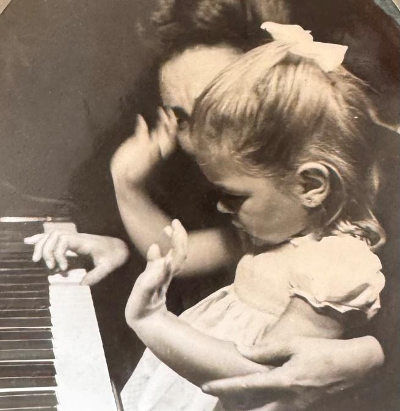
Tocaron el timbre, era Olga la manicura, como siempre a esa hora.
¿Empezamos por los pies? me pregunta, como es su rutina.
Si.
Ahí empezó todo.
Mi vida salía a borbotones, como catarsis de mi boca.
Olga escuchaba atentamente.
Mov.1 Infancia, familia y El Correntino
Mi familia estaba compuesta por mamá, papá, mis tres hermanos
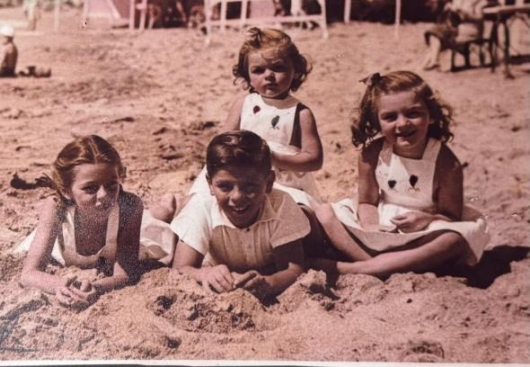
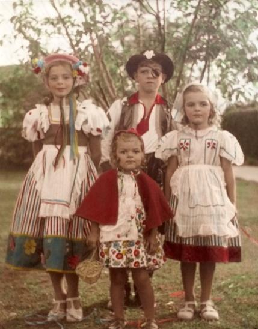
Vivíamos en un departamento en la avenida Callao entre Quintana y Guido.
Cuando tenía 2 años, mis 3 hermanos estudiaban piano, iban a lo de Kussrow, (Cormita para nosotros).
En esa época estaba de moda estudiar piano y Cormita era la más recomendada, Marta Argerich empezó con ella.
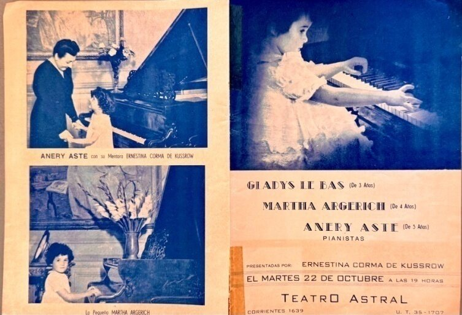
Su sistema de formar "niños prodigios" era famoso, no aprendían a leer partituras hasta más grandes, tocaban todo de memoria.
Yo, como todas las semanas, fui con Miss Mary (Memi) a llevar a mis hermanos y nos quedamos esperando hasta que terminaran su clase.
En ese momento me senté por primera vez en un piano, toque con bastante soltura lo que mis hermanos acababan de aprender ante el asombro de Cormita que, ni lenta ni perezosa, me tomó como alumna.
Esta chica tiene “oído absoluto" le dijo a mamá, que seguramente no tenía ni idea de lo que le estaban hablando.
Empecé a ir a clase de piano todos los días y no fui al colegio hasta 6to grado. Daba los exámenes libres a fin de año.
En mis primeros conciertos era como un monito de circo, me paraban frente al público de espaldas al piano y tenía que decir el nombre de las notas que Cormita reproducía. Después tocaba una obra acorde al tamaño de mis manitos.
Para mí, todo era un juego.
A lo de Kussrow siempre venían músicos famosos y nos hacían tocar frente a ellos.
Yo tuve la suerte de estar, en 1947, junto a Pablo Cassals (violonchelista español) y Jacques Thibaud (excelente violinista francés).
Thibaud, Cassals y Alfred Cortot (profesor de piano de Carlos Kussrow) tenían un trío muy reconocido en esa época.
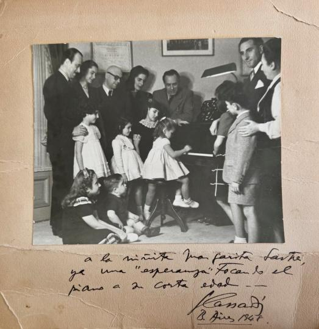
En los veranos, con mis hermanos Carlos, Teresa y María Luisa íbamos al campo El Correntino, mi lugar en el mundo
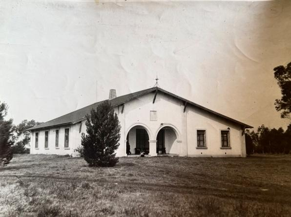
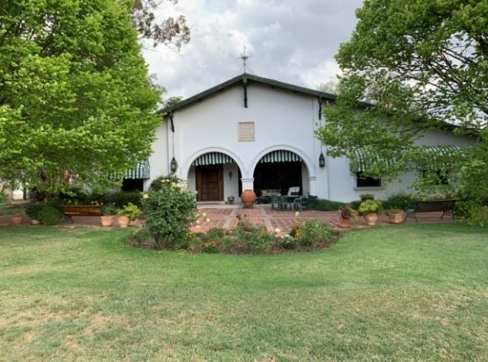
El Correntino queda en Corazzi y nosotros de chicos viajábamos en tren camarote. Eran unos trenes fantásticos, hechos y administrados por los ingleses.
Corazzi era el nombre del maquinista que manejó la primera locomotora llamada La Porteña.
El tren paraba en todas las estaciones, tren carreta o tren lechero como decían en esa época. Me encantaba ese viaje en tren, era la línea Ferrocarril Sarmiento.
A la altura de Haedo ya me iba quedando dormida con ese arrullo y movimiento tan prometedor de un viaje al paraíso.
Dos estaciones antes de llegar, el guarda golpeaba con las llaves la puerta de nuestro camarote y decía ¡Albariño!
Saltábamos felices de la cama. Ya estábamos llegando!!
Las vías del tren pasaban y siguen pasando por dentro del Correntino. ¡Ahora sin trenes!
En invierno hacía mucho frío y llegábamos a la estación, como a las 6 de la mañana.
Corazzi está a 8 km del campo
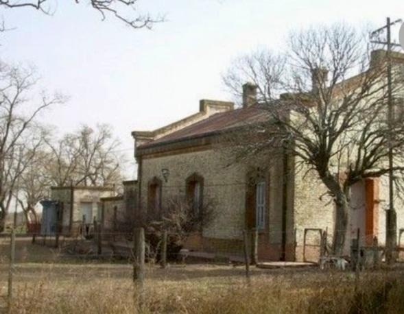
Mamá siempre "invitaba" algún profesor de piano para que nos hiciera estudiar todos los días.
Cormita y Carlos Kussrow, su hijo, iban de vez en cuando. Cormita era muy original, le gustaba tomar sol desnuda. Se escondía entre las plantas y nosotras la espiábamos muertos de risa.
Otros que iban para ese mismo fin eran María Inés Pajariño y el matrimonio Pahissa.
Carlos, mi hermano, era muy melómano ya de chico, compraba todos los discos de música clásica que se escuchaban en casa, a veces ponía el mismo disco hasta el cansancio, tanto que los dos terminábamos cantando las notas por su nombre, de principio a fin.
Era un enamorado de Beethoven, pasión que me transmitió hasta el día de hoy.
También era un estudioso del comportamiento de los animales. Se había comprado unos gansos que se los dejaba a María Falduti, la mujer del herrero, toda una institución en ese tiempo. Ella sabía todo lo que pasaba en el campo, le decían bisagra porque estaba todo el día pegada a la ventana.
Era la primera que avistaba la llegada del mercachifle (vendedor ambulante) que avanzaba en su carreta tirada por un caballo y una mula. A veces venían con él un bandoneonista ciego y el peluquero para los peones.
La diversión y obsesión de Carlos era hacer volar esos gansos. Veranos enteros estuvo corriéndolos hasta que lo logró! Se volvieron bastante salvajes y los veíamos pasar por arriba del casco en bandada. Un triunfo! Papá no entendía nada, quería que Carlos jugara al fútbol.
Carlos era bastante molesto de chico y parece que a mamá la irritaba un poco; un día en el campo, vaya saber que hizo que mamá le tiró con una chuleta de ternera que estaba por meter en el horno y otro día con un busto de Beethoven que perdió la nariz y como testimonio nos acompañó ñato desde arriba del piano durante muchos años.
Carlos entonces se tentaba con esa risa tan contagiosa que tenía y mamá terminaba riéndose con él.
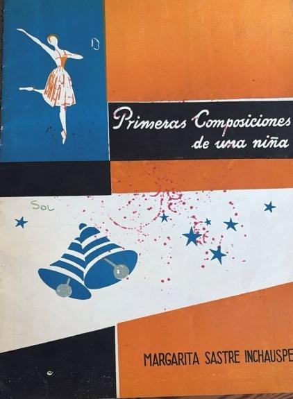
Teresa, mi protectora, siempre en mi defensa de los ataques de Carlos y María Luisa,
- Déjenla tranquila, decía Teresa enojada.
Ella se divertía más en Santa Elena que era el campo de Tío Andrés en 9 de julio. Mis primas, Inés y Juana, eran de su edad.
Otro rol que mamá le habia adjudicado a Teresa era el de "escribidora", yo tenía que componer música y ella escribía lo que yo tocaba.
-Vayan a componer, decía mamá, como si fuera algo normal.
De ahí salió el libro "Pequeñas Composiciones de una niña" editado por Ricordi.
Que loco todo, no?
Mi corta relación con María Luisa fue la de "hermanas menores", teníamos poca diferencia de edad y nos peleábamos por cualquier cosa. Dos personalidades totalmente antagónicas. Ella se llevaba el mundo por delante, era la rebelde de la familia, obviamente la más divertida, y yo más tímida y callada.
Cuando llegábamos a Callao, (vivíamos en el primer piso) se escuchaban desde la entrada del edificio, los zapateos de baile español de Maria Luisa. Ella se encerraba en el living para bailar y tapaba los agujeros de las llaves de las puertas para que no la espiaramos.
Estudiaba con los Hermanos Pericet, muy conocidos en esa época.
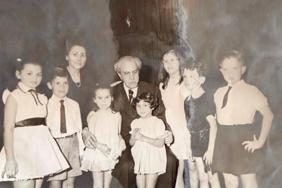
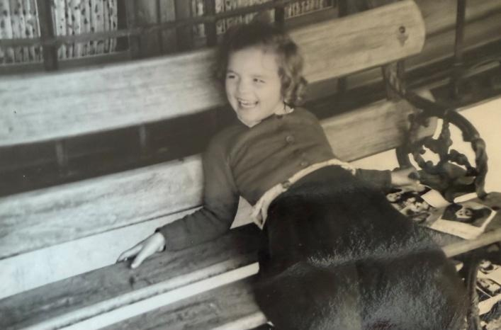
El maestro Jaime Pahissa era quien me enseñaba composición.
Él y Montserrat, su mujer, eran catalanes.
Cada vez que iba a su casa a tomar clase, Montserrat me recibía con un pebete de jamón y queso, el más rico que comí en mi vida. Creo que era porque en casa nunca compraban pebetes.
Los hijos de los Pahissa eran todos mucho más grandes que yo, tenían un cuarto destinado a un tren eléctrico que me fascinaba y algunos sábados me invitaban a jugar con el tren.
Mis únicas amigas en esa época eran Liliana Goitía que vivía en el piso de arriba y Carolina Dupin que estudiaba piano en el mismo lugar que yo.
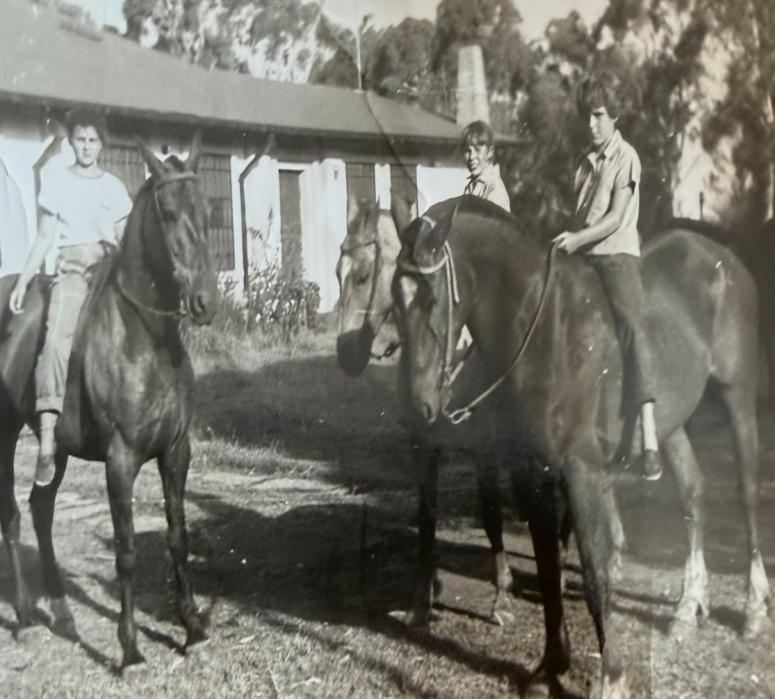
En casa había 2 pianos, uno vertical en mi cuarto y el Steinway de 1/4 cola en el living.
En ese Steinway, antes de que lo comprara mamá, estudiaba Claudio Arrau cuando venía a Buenos Aires. Levantando la tapa encontramos su firma que dice "en este piano estudió las 32 sonatas de Beethoven" Claudio Arrau año 1942
Ahora afortunadamente lo sigo teniendo, es mi piano!!
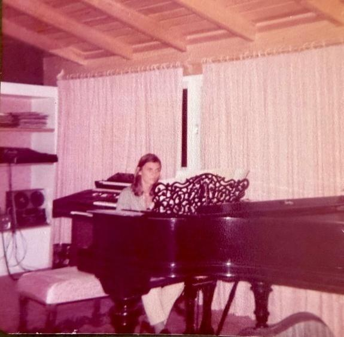
Les voy a contar quiénes eran mis padres:
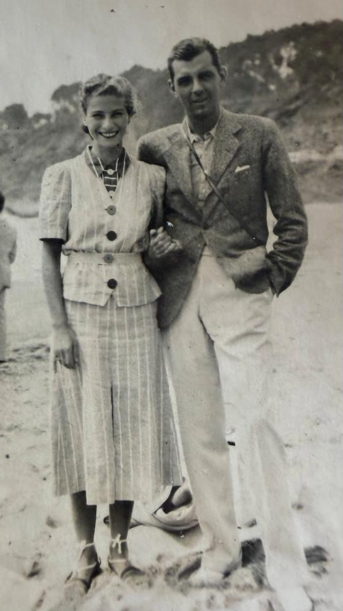
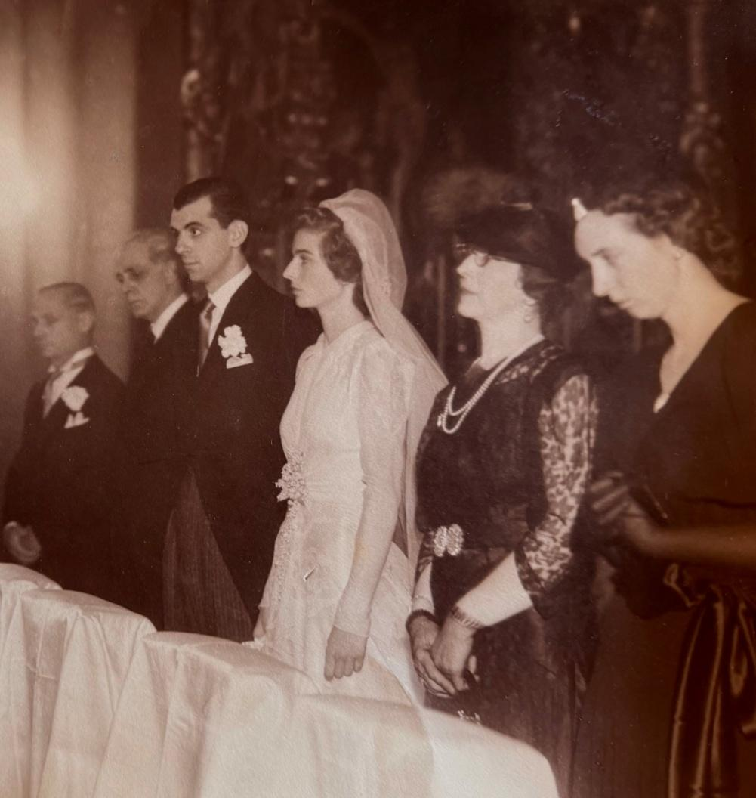
Mamá, María Teresa Inchauspe Rosa. (1914 / 1961) Nació en Pehuajó.
Era hija de un vasco francés, Pedro Inchauspe, y de una italiana, Teresa Rosa Zanoia della Silva, cuyos padres habían nacido y muerto en Crevoladossola, Italia, frontera con Suiza. Yo visité su tumba un par de veces
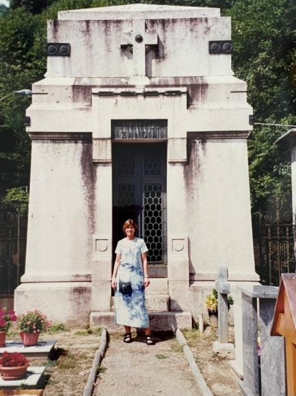
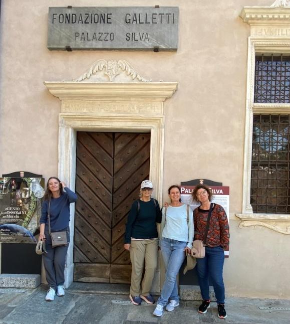
Mamá tenía 6 hermanos, Andrés casado con Susana Migniaquy, Pedrito con Agnette Lund, Mario con Yolanda Airoldi, Lito, mamá con Carlos Sastre y Susana con Vicente Peluffo.
Tío Lito murió muy joven de un infarto. Era médico.
Tío Mario, el padre de Loty y Pedro, murió a los 40 años jugando al polo en la India contra el Maharajá de Jaipur.
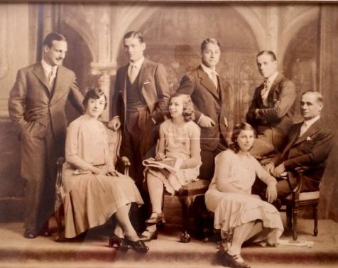
Mamá era muy intelectual, había estudiado de chica un año en Inglaterra cuando al abuelo lo nombraron Presidente de la Cámara Argentina de Comercio en ese país.
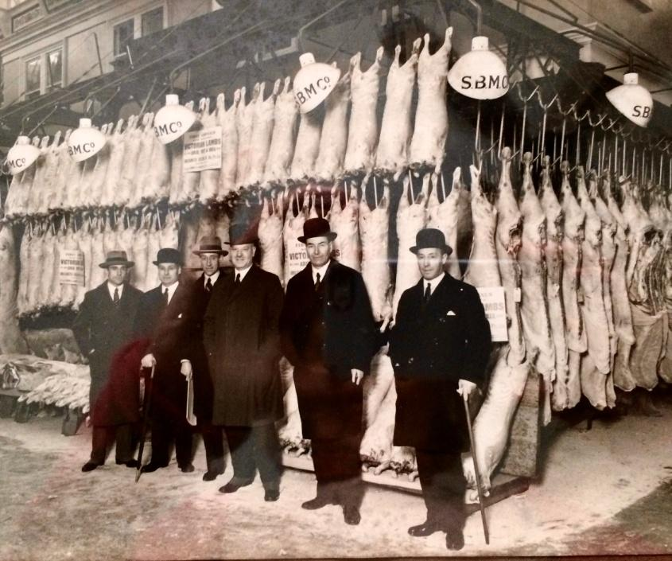
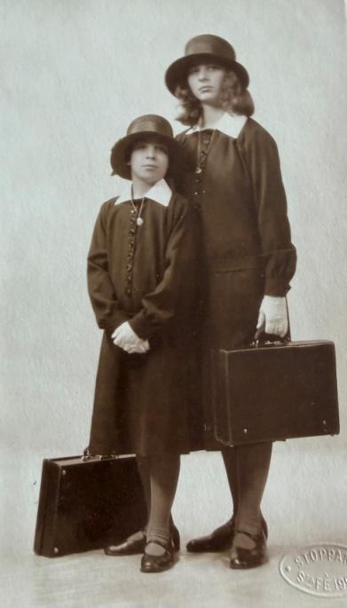
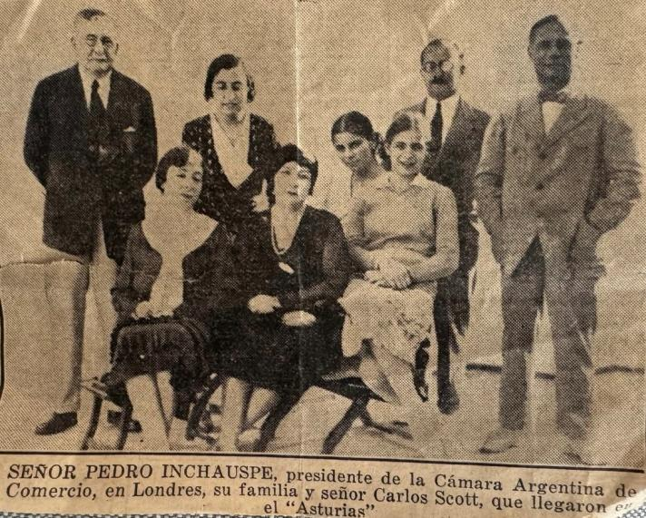
Mamá hablaba perfecto varios idiomas, francés, inglés, italiano y algo de alemán. Antes de morir, estaba estudiando ruso porque decía que los rusos iban a dominar el mundo.
Gran lectora, le encantaba la literatura y escribía muy bien, don que yo no heredé.
Se ganó un concurso de literatura en la alianza Francesa y el primer premio era un viaje a París, como ella no aceptó el viaje le regalaron una pulsera fabulosa de oro y platino.
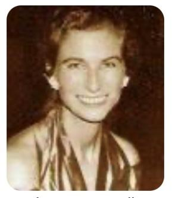
Papá, Carlos Sastre (1911/ 1991), el Negro como lo llamaban, era descendiente directo de Marcos Sastre, hijo de Angel Sastre y Maria Segunda Castro Videla.
Eran 11 hermanos, Angelito, Muñeca, Pety casado con Teresita Sojo, Papá, Richard con Nené Frias, Sarita, Raúl con Susana Gowland, Elena con Luis Morelli, Esther (monja), Horacio con Susana Lobos y Susy con Jaime Martín Grondona.
Papá se recibió de ingeniero civil. Nunca ejerció porque lo suyo era el campo.
Era tan divertido que sabía reírse hasta de sí mismo, siempre muy cariñoso y lleno de amigos.
Cuando se casó con mamá se fueron a vivir al Correntino bajo la tutela del abuelo Inchauspe.
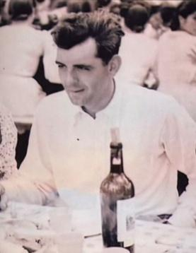
El abuelo Inchauspe era un visionario, fanático del trabajo, se levantaba con la campana de los peones, rompía la escarcha de la bomba para lavarse la cara y salía a trabajar. Todo lo que tenemos se lo debemos a él, a su dedicación y a su intuición empresarial para comprar los campos en el momento justo
¡Siempre le vamos a estar muy agradecidos!
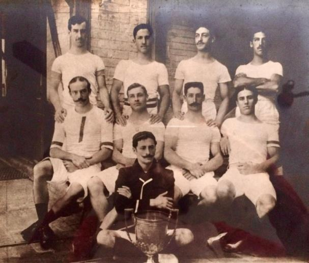
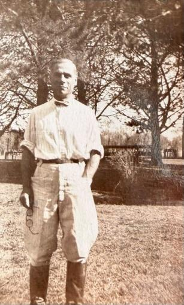
También les tengo que dar enorme crédito a los que siguieron administrando, Carlos, Mario Perkins, Pancho y Santiago del Solar, siempre buscando la última tecnología y la excelencia
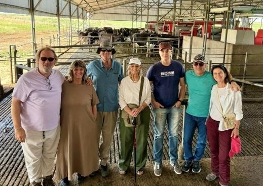
Carlos era el nieto mayor del abuelo y creo que el preferido. Pasaba mucho tiempo con él en su escritorio.
El abuelo y la abuela le contaban historias de familia que él, con su memoria prodigiosa, nos las repetía hasta el cansancio.
La casa de los abuelos quedaba en la calle Quintana entre Callao y Rodríguez Peña donde ahora hay un garaje.
Recuerdo esos almuerzos en el enorme comedor que daba a un patio francés con estatuas cuyas poses imitábamos para sacarnos fotos. Se comía mucho, había varios platos como se usaba en esa época, ¡la abuela era de buen diente!
Después del postre traían un cuenco de madera lleno de avellanas, nueces y almendras, con varios cascanueces.
Nunca faltaba la bandeja de quesos. La abuela me daba café de malta con crema que me parecía exquisito y antes de irnos pasábamos por el office y nos regalaba un Milkibar de chocolate blanco a cada uno.
Ese ritual no se le olvidaba nunca. Los chocolates estaban en un aparador que Carlos rescató y fue a parar al comedor del Correntino. Todavía está ahí, estoico.
Al mirarlo me acuerdo de la abuela abriendo las puertitas del mueble para buscar nuestro premio.
Otra cosa que nos llamaba la atención en la casa de los abuelos, era que los sillones estaban enfundados y debajo de las fundas, por si fuera poco, papel de diario que hacía mucho ruido cuando
nos sentábamos. Eso nos provocaba risas sofocadas, no queríamos que la abuela se ofendiera.
Nunca supimos cómo era el tapizado realmente.
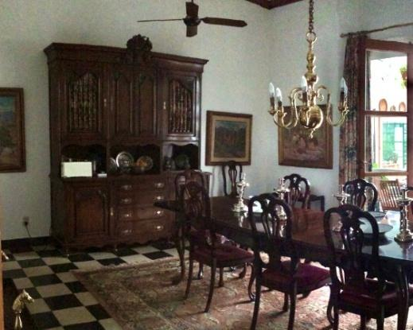
Para papá fue como hacer la colimba vivir en el campo con el abuelo. Aprendió muchísimo en esa época, él venía de una familia totalmente bohemia, en la que madrugar suponía levantarse a las 11 de la mañana; el cambio fue drástico.
Teresa y Carlos iban a la escuela del Correntino; cuando nació María Luisa se fueron a vivir a Buenos Aires, primero al Hotel Alvear y después alquilaron un departamento en Callao y Guido, donde nací yo.
Mamá y papá se trataban de usted y nosotros a ellos también.
Era una costumbre de los Sastre.
A papá le gustaba disfrutar de la vida, era muy trabajador, pero poco ambicioso. Se conformaba con un buen vaso de vino, un café con amigos, baños interminables en el mar.
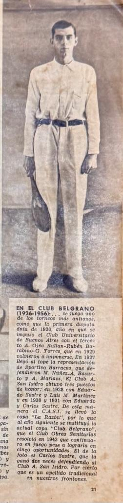
En el campo había una cancha de pelota paleta como en todos los campos del abuelo.
Los peones siempre jugaban a la tardecita,
Papá les jugaba con la zurda para darles chance. Me encantaba verlo jugar. Yo me trepaba al tinglado que estaba pegado a la cancha y siempre les marcaba adonde estaba la pelota que se había ido afuera. Me sentía importantísima.
Él viajaba mucho por trabajo, comprando hacienda y administrando el campo, mi abuelo había muerto hacía unos años y en la división a mamá le había tocado El Correntino.
Cuando mamá y papá tomaron las riendas del campo, hubo muchos cambios.
El abuelo era tan austero que no teníamos ni calefacción, la casa se calentaba en invierno con la enorme chimenea del living y la salamandra del comedor.
Era una casa bastante grande y con techos altos. la había hecho Tío Mario en 1940. Arriba hay un cartel que reza:
Está casa hizo hacer Inchauspe MCMXL
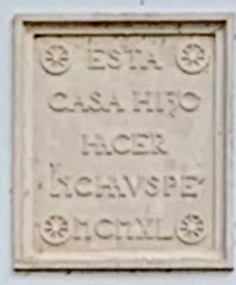
Mamá contaba que la escarcha estaba por dentro de las ventanas y cuando la venían a despertar le decían "hace un frrrio Señora Doña Teresita" Esa frase quedó como una muletilla en la familia.
Mis padres pusieron calefacción e hicieron una pileta. Antes nos bañábamos en un tanque australiano lleno de verdín, a distancia de un potrero de la casa.
Cuando yo tenía 11/12 años un suceso nos cambió la vida.
Papá cada vez estaba menos en casa.
Un día caí en la cuenta de que algo me estaban escondiendo, “papá se había ido de casa”, se había enamorado de otra mujer.
Mamá lógicamente lo tomó muy mal, pero para Miss Mary fue como si la hubieran abandonado a ella. No se lo podía nombrar y mucho menos verlo. ¡Yo viví con ese mandato hasta que me case!
Mamá no pudo soportar la situación, y partió por unos meses con Teresa a Estados Unidos. Para Teresa fue bastante difícil ese viaje.
Cuando llegaron a Nueva York, se quedaron un tiempo ahí, Teresa estudiaba "modelling" y mamá trabajaba en un restaurante haciendo omelettes.
Mi primer colegio fue el Cinco Esquinas, entré en 6to grado. Me costó muchísimo toda esa época de colegio, al no socializar con chicas de mi edad me había vuelto muy tímida.
En primer año fui al Lengüitas, en la calle Juncal. ¡Otra vez con delantal blanco! Aclaro que la escuela pública tenía muy buena enseñanza en esa época.
En el Lengüitas mis mejores amigas eran, Marina Lavalle Cobo, Graciela Aguirre, Eleonora Nazar. Graciela murió hace unos años, con Marina y Eleonora nos seguimos viendo bastante.
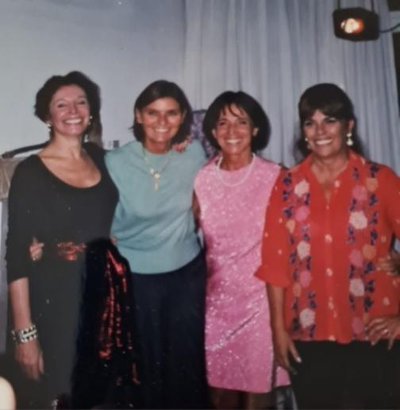
Otro acontecimiento importante en la familia, fue el casamiento de Teresa con Fernando del Solar Dorrego, estuvieron muy poco tiempo de novios y cuando se casaron se fueron varios meses de luna de miel. Fernando era súper buenmozo, venía de una familia muy tradicional de Buenos Aires. Hacían una pareja espléndida. Teresa era muy mona y distinguida.
El casamiento fue en La Merced y la fiesta en la casona que tenían los del Solar Dorrego en la calle Cerrito.
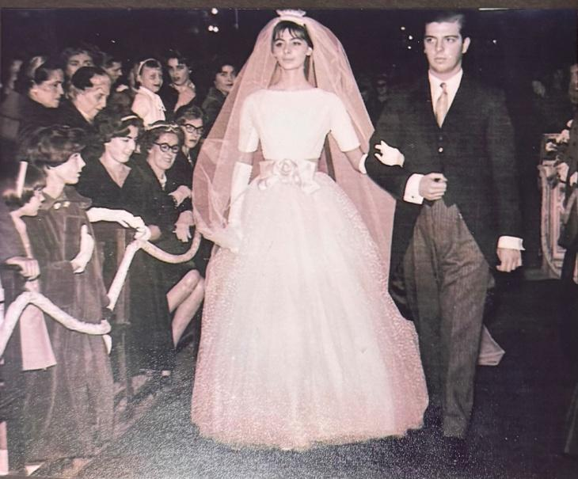
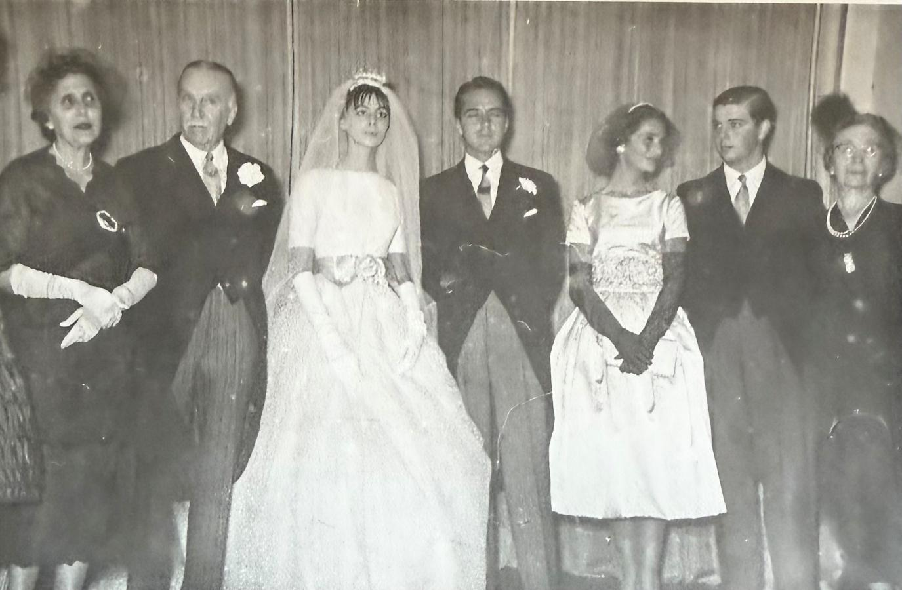
Mov 2: Miss Mary
Fue muy importante en casa, entró a trabajar cuando yo nací.
Muy malcriadora, demasiado pendiente de mí. Carlos era su otro protegido, tanto que cuando hizo la colimba y lo nombraron asistente de un coronel, Memi era la que le hacia todas las diligencias al Coronel: llevar los tapados de piel de la coronela a la cámara frigorífica, le pagaba las cuentas, en fin la colimba la hizo Memi.
También malcrió mucho a mis hijos. Vivió su vida a través nuestro, muy triste.
Mamá tenía una muletilla que decía:- hay que comprar fruta, hay que llamar al plomero, hay que, hay que. Miss Mary decía: -yo soy "Hay Que"
Físicamente se parecía un poco a Margaret Thatcher, en plena guerra de Malvinas se lo encontró al entonces canciller Costa Méndez por la calle.
Le preguntó: - es cierto que me parezco a Margaret Tatcher?
- No, usted es mucho más linda!
Y se quedo feliz.
Murió muy joven de leucemia en el año 1982
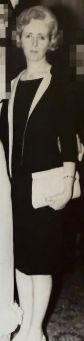
Mov 3: Campo y guitarra
Yo estaba en 3er año y como todos los veranos fui al Correntino. Siempre llevaba una amiga porque me encantaban los trabajos del campo y sola no me dejaban ir. Me pasaba el día arriba del caballo con un calor que se caían los pájaros.
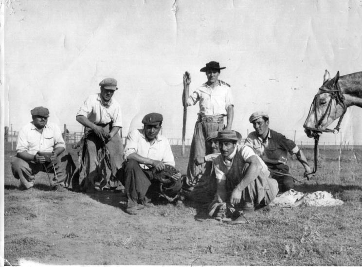
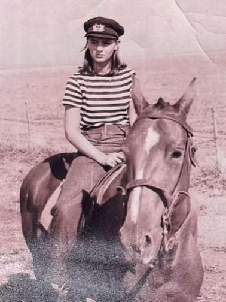
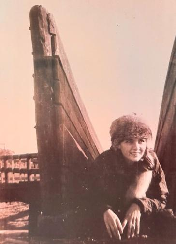
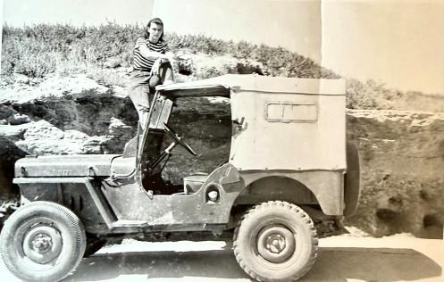
Ese verano no había invitado ninguna amiga, Carlos que ya estaba en la facultad me dice:
Tengo un amigo Oscar Cucullu, que está en el campo acá cerca y tiene muchas hermanas, algunas de tu edad.
Allí partimos a buscar una amiga que le gustara andar a caballo.
Cuando llegamos a La Primavera, estaba toda la familia. Eran un montón, casi todas mujeres.
Elena y Marcela eran las dos que estaban más
cerca mío por edad.
La que se animó a venir fue Elena. ¡Qué insólito! Siempre fue muy arremetedora, sin miedo a nada, agarró su guitarra y partió con nosotros.
Creo que estaba peleada en ese momento con alguna de sus hermanas, lo que facilitó su decisión.
Le pedí que me enseñara a tocar la guitarra.
-Hay que que afinarla, me dijo
-Decime las notas y yo la afino, para mí eso era bastante fácil.
Quedó más o menos afinada y empezó a tocar y cantar "All day all night Marianne"
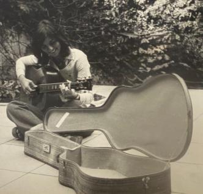
Me enseñó algunos acordes y yo, cuando ella no estaba, agarraba la guitarra y practicaba, LA, MI, RE, LA, MI, RE infinitas veces como buena vasca hasta que me salió de taquito.
Después todo me resultó bastante fácil.
Elena se aburrió y me escondió la guitarra debajo de la cama de Carlos.
Un día me confesó matándose de risa: -me dio bronca estabas tocando mejor que yo.
Seguimos siendo grandes amigas hasta el día de hoy.
Nunca toque demasiado bien la guitarra y el canto tampoco era lo mío. Todo muy amateur. Pero me divertí muchísimo y me abrió otro mundo.
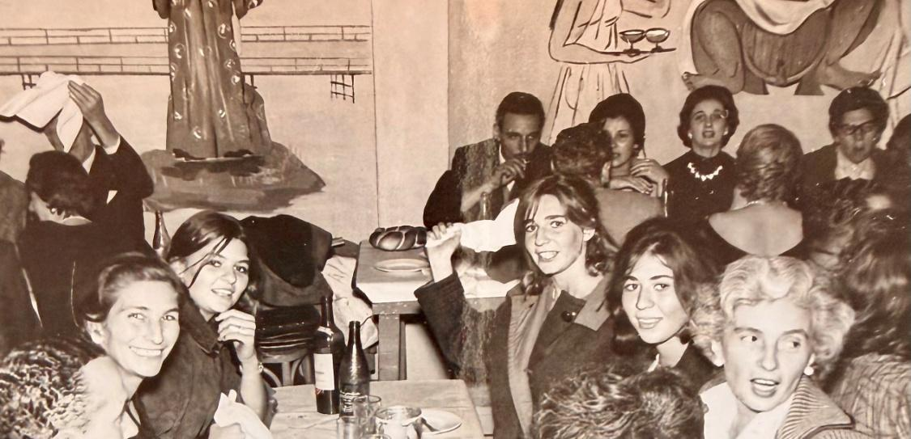
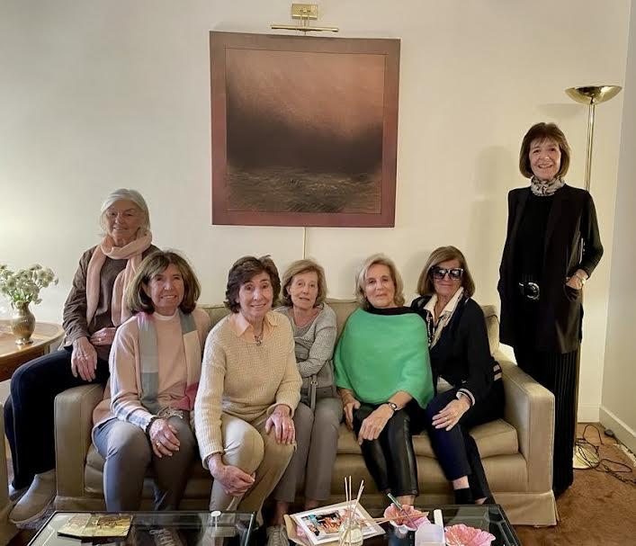
Mov 4: Santa Unión
En 4to año entre en el colegio Santa Unión
Conmigo entraron muchas chicas del Michael Ham.
En la clase de música, la profesora preguntó: - quién sabe cantar y tocar la guitarra?
Misteriosamente levante la mano, con mi timidez me sigo preguntando cómo me anime! Fue una de mis mejores decisiones.
Tres chicas más levantaron la mano. Nos mandaron a ensayar algunas canciones para el 25 de Mayo. A mi me encantaba el folklore.
Fue así que conocí a la que hoy es sin duda mi mejor amiga, casi como una hermana, Hebe Murray, a Silvia Küderli (la nómade) otra gran amiga y a Josefina del Solar. Nunca me divertí tanto como en 4to y 5to año con Hebe y Silvia.
Cantábamos a voces sin parar, donde fuera, en la calle, el colectivo, la peluquería.
¡Qué linda época!
Ensayábamos en el cuartito de la Popy (una monja del colegio) que tenía un piano bastante desafinado y una calefacción que estaba en MI, como pudieron constatar Hebe y Silvia cuando les dije.
Mov 5: Mi primer viaje a Europa
El verano de 1960/1961 mamá nos propuso ir a Europa, yo no quería saber nada, me quería ir al Correntino.
Me convenció porque nos llevó a un lugar en la Camargue al sur de Francia, un campo atendido por su dueño, y pasamos unos días andando a caballo al borde del mar. En esa zona se filmó la película Crin Blanca y la mayoría de los caballos son blancos con crines largas. Un día el dueño del campo nos propuso ir al pueblo, no más grande que 30 de Agosto (pueblo más cercano al Correntino), compramos la ropa típica que usan los peones del lugar para andar a caballo. Me impresionó, eran idénticas a las bombachas batarazas de nuestros paisanos.
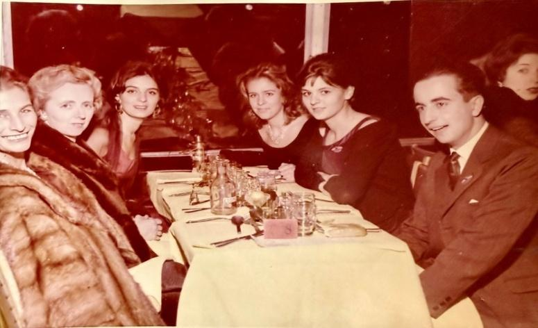
Empezamos el viaje en París, éramos Mamá, Maria Luisa, Miss Mary, una prima segunda que no conocíamos, Mónica Beccar Varela, y yo.
En el hotel Galia, de la Rue Pierre Charron hicimos base. Zona Champs Elysees.
Íbamos y volvíamos a Paris en donde nos esperaban nuestras valijas en ese Hotel.
Para Año Nuevo cenamos en uno de los Bateaux Mouche, (unos barcos que circulan por el Sena) con Máximo Costela, un amigo de Carlos que estaba viviendo en París. Festejamos la llegada de 1961 que si lo ponías cabeza abajo también se leía 1961.
En el museo de los impresionistas mamá me presentó a Van Gogh, me acuerdo como si fuera hoy ese cuarto de Nimes con la silla y la cama de madera. Cada vez que veo esa pintura me transporta a ese momento.
Fuimos en tren camarote a Cortina D' Ampezzo a esquiar, más bien a aprender, la única que sabía era mamá que nunca esquió.
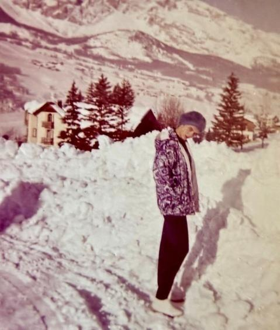
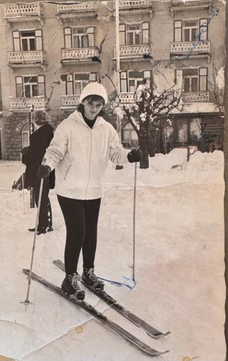
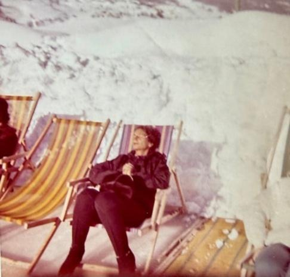
También fuimos a Venecia, a Madrid, de ahí en tren a Sevilla, en donde conocimos un sevillano muy simpático, Paulino Gutiérrez Béjar (retengan ese nombre que vuelve a aparecer)
Yo me había puesto un poco pesada porque quería comprar una guitarra española, el sevillano, muy amable, nos acompañó a la casa de un luthier conocido por él, Rafael Morales.
Esa sigue siendo mi guitarra hasta el día de hoy, muy envidiada por todos.
Paulino GB me llamaba Belinda porque decía que yo era muda! (Era la protagonista de una película de 1948.)
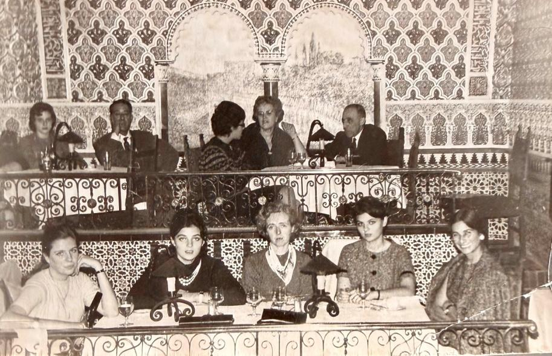
Miss Mary y yo pegamos la vuelta desde Madrid en febrero. Hebe y Silvia me decían ¨Sastre ausente¨ yo faltaba tanto al colegio que me había llevado un par de materias a marzo, por suerte las pasé.
María Luisa tuvo un noviazgo con Martín Achaval algo interrumpido y conflictivo. En ese momento estaban pasando por un buen momento.
Mov 6: El accidente
En las vacaciones de invierno fuimos al campo como de costumbre.
Yo fui en el auto con Miss Mary, Patricia Goodliffe (amiga del colegio) y Carlitos Avendaño, mi novio secreto; según mamá yo era muy chica para estar de novia.
Carlitos estaba en la facultad con Carlos. Los dos estudiaban Agronomía.
Los Avendaño tenían el campo en 30 de Agosto, muy cerca del Correntino y un negocio de Ramos Generales en el pueblo.
Dos días más tarde iban a venir mamá y María Luisa con Gloria Lanusse, una prima nuestra y Nélida Ormaechea, la cocinera de casa.
Ese 10 de julio de 1961, mi mundo se dio vuelta.
A la tardecita llegó tío Pedrito, hermano de mamá, con el mayordomo.
Venían de la estancia La Margarita en Albariño.
Tío Pedrito muy desencajado me abraza y me dice que habían tenido un accidente en Mercedes, no sabia mucho mas.
Emprendimos la vuelta inmediatamente, todos impactados por la noticia, íbamos mudos en el auto.
Parábamos en todas las camineras para averiguar si tenían información. En alguna, no me acuerdo cual, le dijeron a tío Pedrito que mamá había muerto, tenía 46 años.
Rompimos en llanto. Nunca pude superar ese dolor.
El accidente había sido con un tren en las vías que cruzan la ruta 5 a la altura de Mercedes. Era un cruce muy peligroso, tenía unas plantaciones de duraznos que tapaban toda la visual.
Seguimos por la ruta 5, teníamos que saber que había pasado con María Luisa, Gloria y Nélida.
En otra maldita caminera nos dieron la noticia que María Luisa también había muerto, Gloria y Nélida estaban internadas en Mercedes, muy graves.
Gloria por suerte está bien y la veo de vez en cuando. A Nélida, que también sobrevivió, no la vi más.
Llegar a Callao, encontrarme con Teresa y Carlos fue trágico. Teresa, mi eterna protectora, me abrazaba y trataba de consolarme, ella estaba tan desconsolada que era una misión imposible. Carlos en ese momento se convirtió en el "pater familia".
¡Ese fue el peor día de mi vida!
Callao se llenó de gente, que nos acompañaron durante muchos días, todos muy cariñosos. Muchos amigos de Carlos, las infaltables amigas de Teresa, María Victoria, María Luisa y Josefina, Martin Achaval, y amigas mías del colegio.
Me acuerdo especialmente de tía Yolanda y Loty mi prima. que estuvieron desde el primer momento, Loty que además era muy amiga de María Luisa, se quedaba a dormir conmigo. Tía Yolanda que era muy divertida y animosa, trataba de distraernos, prendía la televisión a escondidas de Miss Mary. Me acompañó muchísimo.
Papá también estaba en Callao y venían muchos amigos a darle el pésame.
Él había perdido una hija y aparte de su inevitable dolor, seguramente cargaba con una gran culpa.
Aclaremos que además del drama que se vivía en casa, teníamos a Miss Mary, desolada como todos, pero muy enojada con papá y no quería ni verlo.
Situación muy complicada y absurda al mismo tiempo. No había espacio para enojos. Quiero destacar que papá nunca quiso nada de lo que heredó de María Luisa, nos dejó todo a nosotros. Muy noble de su parte.
Poco a poco en Callao fuimos volviendo a una especie de normalidad ficticia.
Teresa y Fernando se habían mudado a casa para no dejarme sola.
Eternamente agradecida por el gesto que tuvo Fernando, no dudó ni un momento en tomar esa decisión.
Unos días después del accidente, llegó una carta para mamá fechada el 12 de julio y la recibí yo.
Era de Paulino Gutiérrez Béjar: - se habrá enterado de lo sucedido, me pregunté.
Sin dudarlo la abrí, Paulino le escribía una carta de amor y despedida.
En Sevilla habían salido un par de veces y él quería una relación más seria pero entendía que mamá estaba en otra etapa de su vida, etc etc,
Él era bastante menor que mamá, no sabría decir cuánto.
Me quedé atónita, me costó entender lo que estaba leyendo y además me sentía horrible por haber leído esa carta tan íntima.
" Efectivamente la distancia es una barrera.... pasará algún tiempo antes de que se me borren sus facciones y especialmente la cara de la pequeña Belinda, la muda Margarita".
Todavía tengo guardada esa carta.
Volví al colegio por pedido de Carlos que con sus 22 años tuvo que tomar las riendas de todo, terminar la facultad y ocuparse del campo.
Tío Andrés, otro hermano de mamá que ya estaba administrando el Correntino, lo ayudó muchísimo hasta que se recibió.
Mi vuelta al colegio fue angustiante.
Hebe y Silvia me ayudaban como podían a sobrellevar esa pesadilla.
Teresa nos contó una tarde que estaba embarazada, ¡qué alegría!
Cuando ya estaba más avanzada en el embarazo se fue a vivir a la casa de los del Solar en Cerrito. Tenían una suite enorme para ellos dos.
Luis nació el 23 de mayo de 1962, Teresa me nombró madrina y yo feliz.
Luis era un chico muy inquieto, me acuerdo que le encantaban los relojes, los autos y Rita Pavone, jaja.
Después Teresa tuvo 2 hijos más: Santiago y Fernando.
Coda de este movimiento (Epílogo)
Unos años después del accidente, con Carlos y Teresa dividimos los campos.
A Carlos le tocó el Correntino, a Teresa La Frontera en Pehuajó y a mi Nueva Bélgica y Las Tunas Chicas
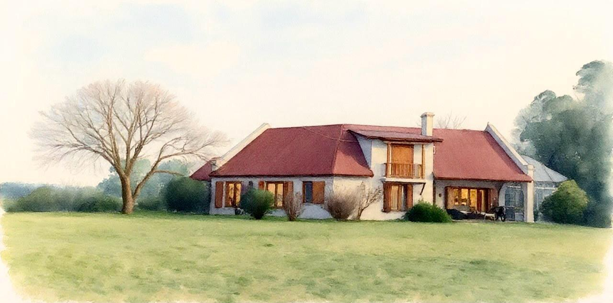
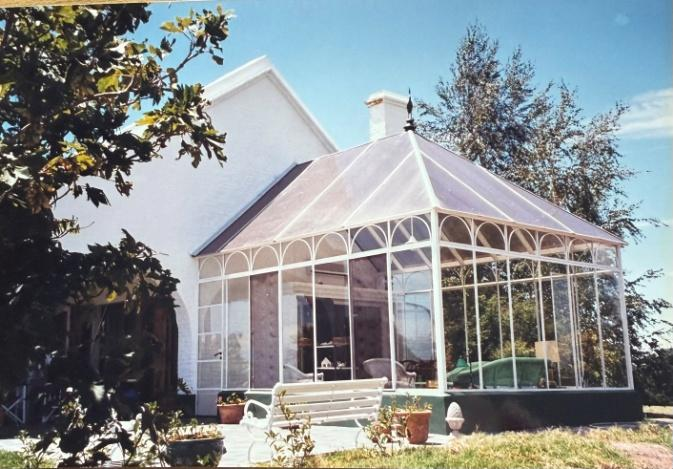
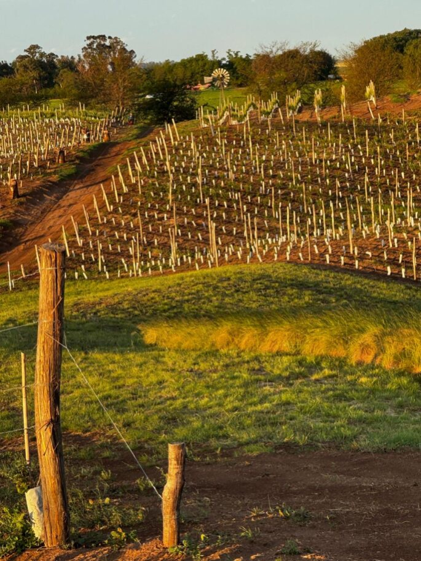
Para Carlos El Correntino era también su lugar en el mundo, lo disfrutó muchísimo. Invitaba a un montón de amigos, Javier Eguiguren y su padre eran los que más iban. También Emiliano Greco, su pareja.
Le hizo muchos arreglos a la casa, su mayor acierto fue el jardín de invierno.
El parque estaba y está lindísimo. Carlos se ocupaba mucho, le encantaban las plantas, yo trato de seguir sus pasos. Marcelo el parquero de siempre tiene todo impecable, lo mismo que Marta en el chalet que cocina como los dioses y siempre volvemos con unos quilos de más.
Cuando murió Carlos nos dejó el Correntino a Teresa y a mí. Ahora lo comparto con los hijos de mi hermana Teresa. Mis únicos y queridos sobrinos con los que me llevo muy bien.
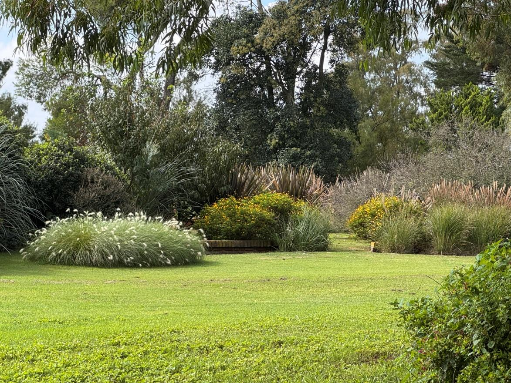
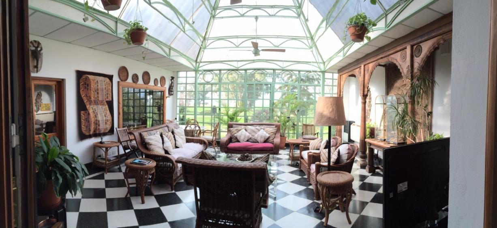
Mov 7: Escenarios
Para esa época yo no estaba tan dedicada al piano, aunque seguía tocando.
Carlos Kussrow, que era mi profesor desde hacía muchos años, tenía una cátedra de piano en una universidad en USA.
Él fue fundamental para mi formación musical.
María Elena del Solar, prima de Fernando estaba organizando un show a beneficio en el Teatro San Martín. Nos había oído cantar en el colegio y quería que participáramos. En el Santa Unión nos habíamos hecho muy "famosas"
Por suerte siempre estaba la música en mi camino.
La época de los shows de María Elena me ayudaron muchísimo para seguir adelante.
Cantábamos canciones italianas muy de moda y los yodels que nos había enseñado Silvia. Su padre era suizo y ella lo lleva en la sangre.
María Elena hizo varios shows. Era una enamorada del teatro y se compró una casa en San Telmo donde
guardaba unos vestuarios increíbles.
La convirtió en un teatrito "El salón del 900", hizo varias obras de teatro amateur; fue la pasión de su vida
En esa época yo ya había cortado con Carlitos, teníamos una relación virtual sin "internet". Solo por cartas que llegaban a lo de Hebe. Él estaba mucho en el campo, era un noviazgo inviable.
Mov 8: Los Perkins
Mario Perkins, otro amigo de Carlos de la facultad apareció en mi vida.
El padre tenía un haras muy chico en esa época llamado La Irenita.
Atlas su caballo estrella gana el Carlos Pellegrini, el clásico más importante del turf.
A partir de ahí el haras cambió totalmente, hicieron las padrilleras y Atlas llegó al campo con bombos y platillos.
El haras queda en Daireaux, relativamente cerca del Correntino.
Mario era el administrador.
Hijo de una familia numerosa, su padre Edmundo C. Perkins apasionado por los caballos de carreras.
Su madre Marta Guers Gamen había nacido en Francia, en Chambéry.
Los campos de Pehuajó vienen de su familia.
Tenían 9 hijos, Edmundo casado con Babela Badaracco, Roberto con Malú Hermida, Marta con Cacho Pieres, Zulema con Luis Villamil, Julio con Evelyn Barsdorff, Tito con Celia Ramos Mejía, Emilia con Federico Sola, Irenita (que murió a los 2 años de difteria) y Mario. Doña Marta, nunca se recupero de la pérdida de Irenita.
Mi suegro se había comprado un Peugeot, pero no manejaba; lo llevábamos todos los sábados o domingos al hipódromo de San Isidro, después nos quedábamos nosotros con el auto todo el día. Creo que fue una excusa para comprarle un auto a Mario sin decirlo.
Mi suegro era tan pero tan cabeza dura que le discutía la hora al "pip" de la radio. Está 2 segundos atrasado decía mirando su reloj Vacheron Constantin.
Un día me invitaron al departamento de Libertador y Bustamante donde vivían mis suegros. Era un almuerzo familiar.
Entré en pánico cuando me enteré. La que más nervios me daba era doña Marta.
La familia Perkins me recibió como una hija más, yo tenía 16 años y mucho de lo que soy ahora se los debo a ellos.
A partir de ahí empezamos a ir seguido a la Irenita.
Mov 9: Casamiento
Papá quiso ser mi padrino de casamiento y yo desgraciadamente no acepté.
Si hubiera podido ver las cosas con la experiencia y la claridad que tengo ahora, me habría evitado muchas culpas. Con los años volví a verlo a escondidas de Memi. Pudimos recuperar de a poco el tiempo perdido y por suerte en ese reencuentro conoció a mis hijos.
Reconocí mucho de papá en mi y eso me resultó algo nuevo y reconfortante.
Murió en el año 1991, acompañado por todos nosotros.
Actualmente me veo más con mis primos Sastre y almorzamos de vez en cuando en el Náutico.
Con Mario nos comprometimos en el mes de marzo de 1963.
Carlos me organizó un fiestón en El Correntino.
Asado para amigos y personal.
Después una fiesta criolla con carrera de sortija incluida.
Como éramos muchos, Hebe, Silvia y yo la noche anterior fuimos a dormir a la casa del mayordomo, ahí fue cuando “le hice entrega” a Hebe de mi anillo con los caballos que sigue usando hasta el día de hoy!
Me casé a los 18 años el 18 de octubre de 1963
Carlos fue mi padrino de casamiento y Teresa que estaba esperando a Santiago, fue mi madrina.
La ceremonia fue en el Santísimo y la fiesta en el Hotel Plaza
Nos fuimos a Brasil de luna de miel, en barco.
Allí nos encontramos con Esteban Pereira Iraola y su mujer María Forrester.
Esteban era otro gran amigo de Carlos pero del colegio.
Terminamos haciendo el viaje los 4 juntos. Congeniamos mucho, nos hicimos muy amigos. Hoy Esteban es el padrino de Pancho.
Malú
Roberto se ocupaba del campo, y con Malú vivían en la casa grande.
Me hice muy amiga de ella, es muy divertida, creativa e inquieta.
Todo lo que aprendí en ese momento de plantas, tejido, decoración se lo debo a ella, para todo tenía talento.
Estaban de moda los muebles viejos, ella los mandaba a hacer por un carpintero del pueblo y después los agarrábamos a cadenazos para envejecerlos ante la cara atónita del pobre carpintero!
Pero lo mejor fue la complicidad que se creó entre nosotras, hacíamos locuras como irnos caminando 15 kilómetros, del campo a Daireaux en pleno mes de febrero.
Era una apuesta que les habíamos hecho a Mario y a Roberto. El lugar de encuentro era la heladería Doval, muertas de calor y llenas de ampollas en los pies, nos comimos felices nuestros helados.
Zulema y Luis
Con Mario, Zulema y Luis Villamil, hicimos un viaje a Europa juntos.
Primero fuimos a Madrid. Sacamos entradas para una corrida de Toros en Toledo. En esa época era un programon.
Almorzamos en el parador Conde de Orgaz (como el cuadro de El Greco), donde se comía muy bien. Acompañamos con una sangría exquisita. Como teníamos que esperar que llegara la hora de la corrida de toros, nos quedamos charlando en unos sillones muy confortables del parador.
Nos despertamos a las 7 de la tarde, "pues ni toros ni nada ¡ole! "
La sangría nos había pegado tan fuerte que nos perdimos los toros..
Con los Villamil compartimos veranos, viajes……etc, toda una vida.
Yo me hice muy amiga de Zulema.
Íbamos juntos todos los veranos a Punta del Este.
Un año alquilamos una casa enorme las 2 familias, siempre nos entendimos super bien, cero discusiones, fue un verano genial.
Con Zulema, Malú y Evelyn siempre nos juntábamos a almorzar.
Desde que murió Zulema, nosotras tres seguimos con la misma rutina.
Silvia Pieres
Silvia hija de Marta y Cacho Pieres fue como una hija más en casa. Era cinco años mayor que los mellis, y todo el tiempo quería alzarlos y darles de comer, se pasaba el día con ellos.
Le fascinaban los bebés.
En La Irenita cada vez que nos íbamos a subir al coche estaba Silvia paradita al lado agarrada de la manija y decía su famosa frase: - Puedo ir?
Siempre quería ir a todos lados, no importaba donde.
En un viaje que hicimos con Mario a Europa, la dejamos a cargo de Ombú, mis hijos eran todos más grandes. Fue un caos pero los chicos no se lo olvidan más.
Silvia murió en el 2007 a los 47 años. ¡Muy fuerte!
Dorita y La Irenita
En la Irenita había un matrimonio de caseros, don Quinto, Doña Rosa y su hija Dorita.
Con los 2 primeros no tuve mucho trato. Cuando murieron sus padres Dorita quedó a cargo de todo
Fue la persona más entrañable y más chismosa que conocí en mi vida. Lo despertaba a Mario a la mañana temprano cebando unos mates y yo los oía cuchichear sin parar. Dorita quería los chimentos de la familia en Buenos Aires y Mario los del campo.
Yo me tapaba la cabeza para poder seguir durmiendo.
Cocinaba como los dioses unas comidas y postres complicadisimos, y en los veranos éramos no menos de 25.
Si quieren sus recetas pídanle a Maggie que se las fue sonsacando.
Cacho, el marido de Marta preparaba el Gancia con limón,
Roberto era el encargado de la sangría en el almuerzo, motivo de eterna discusión, le falta más agua, no más azúcar etc. hasta que a veces se calentaba y les decía, prepárenla ustedes.
Los veranos en La Irenita fueron inolvidables. Los chicos se divertían muchísimo, eran un montón de primos, salían todos a caballo.
Los domingos íbamos a misa en Daireaux y el programa obligado era ir a comer un helado a Doval.
Yo pasaba mucho tiempo con mis sobrinos, les encantaba cantar y que yo tocara la guitarra.
Mov 10: Mis hijos
El 25 de octubre de 1964 tuve mi primer parto, Unos días antes el médico me dio la noticia:- ¡son mellizos! Imagínense el susto que nos pegamos, además de mi apuro por conseguir otra cunita igual y todo lo que tenía preparado para uno.
Los mellis nacieron de parto natural, como todos mis hijos.
Eran divinos, María Luisa y Mario Agustin.
Isa, como le decía Mario, era más inquieta, caminó antes y se escapaba del corralito para alcanzarle los juguetes a Mario, que era mucho más tranquilo, los dos eran lindísimos, pero Mario,,,,, como dice Isa,
Yo tenía mucha ayuda, Rafaela la enfermera y Memi que no se separaba de ellos.
A mi suegro se le caía la baba, tras que Mario era su benjamín, todos los sábados religiosamente se los llevábamos a pasar la tarde a su departamento de Libertador, quedaban al cuidado de Olga, la Memi de Mario.
Cuando yo estaba esperándolo a Pancho, a Emilia (hermana de Mario) le diagnosticaron un cáncer.
Estaba embarazada y la operaron ni bien nació Emilita, pero al poco tiempo desgraciadamente murió. Toda la familia quedó destruida.
Ese mismo año nacieron 3 bebés en la familia. Ceci Villamil, Emilita Sola y Pancho.
Panchitouuu cuando nació no era tan lindo como los mellis, y Teresa que fue su madrina atino a decir, ¡tiene lindas orejas!
Después se puso divino, simpático y muy morfón.
Al año siguiente nació Maggie, mucho más tranquila que Pancho, la más parecida a mi y de grande a mamá.
Tres años más tarde apareció la pequeña Chofi, como tenía asma, y realmente la pasó muy mal, era la más malcriada. Yo la consentía bastante para compensar.
Con 27 años tenía 5 chicos, era como para decir basta y así fue.
Mov 11: Ombu
Al principio vivíamos los dos en Callao con Memi y Carlos, que viajaba mucho.
Cuando me quedé embarazada de Pancho decidimos mudarnos.
Compramos junto con Carlos la casa de Ombú en Barrio Parque que era de los Clucellas.
Casualmente cuando yo era chica y acompañaba a mamá al Olivos Golf Club, pasábamos a buscar a Rolo Clucellas, un amigo de mamá, por esa misma casa.
Me hizo mucha ilusión la mudanza.
Carlos tenía su departamento en el último piso.
Ombú para mí y para los chicos fue un emblema de familia.
Mov 12: Amigos, esquí…
Al poco tiempo se mudaron a la casa de al lado Manucho Tanoira y María Luisa Zorraquín.
Empezó una gran amistad, nuestros hijos jugaban todos juntos en la vereda.
Manucho era un personaje increíble. Tenía un taller que te arreglaba lo que fuese, aspiradoras, esquís...
Se había comprado un colectivo que lo convirtió en casa rodante. Él lo arreglaba, de mameluco todo engrasado, frente a la casa de Barrioparque.
María Luisa era y sigue siendo muy gaucha siempre dispuesta a ayudarme cuando venían invitados a comer. "Yo te hago la salsa….. y le explico a la cocinera como tiene que hacer la carne". Mi nulidad por la cocina era asombrosa, mis hijos son testigos.
María Luisa y Manucho vendieron Ombú después que yo y en pandemia se fueron a vivir a Cumelen en Villa la Angostura. Manucho murió hace unos años, María Luisa se quedó a vivir en Cumelen y continuamos con nuestra gran amistad.
Otros grandes amigos nuestros son Rosa Maria y Mario Ricci. Compartimos infinitos partidos de tenis, muchas temporadas de esquí en Bariloche y en Portillo y veranos en Punta del Este.
Mov 13: Lotty y Tristezas
Una tarde de invierno me llamo Lotty Inchauspe mi prima tan querida y me dice:
"Tengo una letra que le escribí a Maria Luisa para que vos le pongas música"
Yo estaba en el living, y el único teléfono que teníamos abajo estaba en la cocina.
Querés que te la dicte?
Bueno
Busqué lo que encontré a mano y ahí en el office, incomodisima, escribí toda la letra.
Ni bien terminó, corté y me fui al living, agarre mi guitarra y de principio a fin compuse la única canción que me salió en mi vida.
La llamo a Hebe: -Tengo algo para mostrarte.
Al día siguiente en el living le terminamos de dar forma. Como era una profesora de guitarra "muy exitosa" divulgó entre sus alumnas Tristezas por María Luisa, así se llama la canción.
Fue muy conocida y tocada en la guitarra por las chicas de los colegios de la zona.
Una vez una alumna mía de piano del conservatorio Beethoven, Andrea Sosa, me pidió que se la enseñara, sin saber que yo la había compuesto.
Fue muy emocionante.
Lotty aparte de escribir muy bien era muy divertida y muy creativa. Su pintura era su reflejo, muy de avanzada, y muy loca en el buen sentido!
Una tarde de invierno se fue de golpe a los 67 años. Tristezas por Lotty.
Mov 14: Hebe Y Silvia
Volvimos a cantar las tres amigas en unos shows a beneficio organizados por Hebe en el Coliseo. Con Silvia cantamos los yodels que eran nuestro caballito de batalla.
Silvia se casó con Dady Gibert. Su espíritu de nómade hizo que nunca supiéramos donde estaba viviendo: ayer en Bariloche, mañana en Suiza, también en Mendoza, hasta que se radicó (definitivamente o no nunca sabremos) en San Martín de los Andes.
Hebe, mi íntima amiga y confidente hasta el día de hoy, también vivió momentos muy difíciles.
Cuando yo estaba esperando a Pancho veraneando en Punta del Este me entero que Patricio, el hermano menor de Hebe había muerto en un accidente de auto en el campo.
Otra vez nos golpeaba la desgracia, otra vez las vigilias y visitas de pésame pero esta vez en Av. Alvear.
No había consuelo!
Hebe en esos días conoció a Esteban Azumendi. Su actual marido.
Tuvieron dos hijos Esteban (oído absoluto) y María mi ahijada, también muy música y super emprendedora.
Esteban padre es muy buen arquitecto y nos hizo el proyecto y dirección de obra de la casa que tuvimos en La Barra. Muy moderna para su época.
Mov 15: Mercedes, Las Arriola y Patricia
En un concurso de canto organizado por Hebe, yo fui uno de los jurados.
Cantaron 4 chicas que me volaron la cabeza. Las Arriola: - Son buenísimas le digo a Hebe.
¡Terminaron ganando ellas! Con Mercedes, Clara, Maria, y Julia Arriola nos hicimos muy amigas.
El destino la llevó a Mercedes, casada con Jorge Mac Donough, a vivir en La Irenita. Jorge era veterinario y se iba a ocupar del haras que para ese entonces ya tenía otra envergadura.
Para mí fue un antes y un después de mis estadías en La Irenita.
Nos hicimos muy compinches con Mercedes. Cantábamos sin parar, nuestro hit del momento que era Killing me softly.
Tengo un montón de recuerdos lindísimos de esos días.
Una vez los disfrazamos a Mario y a Jorge de bataclanas para una fiesta de disfraces.
Fuimos a los ramos generales de Daireaux para comprar el vestuario adecuado. No había taza de corpiño que nos pareciera suficientemente grande, tenían que estar exuberantes!
Ya disfrazados yendo para la fiesta, cargamos nafta en el pueblo, imagínense la cara del playero al verlo a Don Mario Perkins, disfrazado de vedette! (hay foto pero la reservo jaja)
Mercedes tenía 2 hijos en ese momento. Matias y Agustina.
Matías era un diablillo y se pasaba el día con un taquito de polo.
Agustina, una bebota amorosa, tristemente se la llevaron al cielo cuando era muy chiquita.
¿Cómo se vuelve de un dolor semejante?
Por suerte Mercedes después los tuvo a Sofía y a Pablo.
(Los dos varones son muy buenos polistas. Siguieron con la pasión del padre, los caballos y el polo.
Siempre supe que Mecha era una persona muy fuerte, se propuso salir adelante y lo logró.
La fe la ayudó mucho.
Demos vuelta la página.
Las Arriola le grabaron todos los coros a un cantante muy conocido por esos tiempos, Donald, (Sucundum) y a su hermana, Patricia McCluskey, de la que también me hice muy amiga.
Con ella y las Arriola hacíamos veladas musicales hasta cualquier hora y nos veíamos muchísimo.
Empecé a escribirle a Patricia algunos arreglos para la banda que la acompañaba en ese momento en el Sheraton. Al principio yo no me tenía nada de fe, después me fui convenciendo que podía hacerlo y no sonaba tan mal.
Firmaba Maggie Taylor
En ese entonces también me hice amiga de la desopilante Gorda Pero
En Daireaux se organizó un concurso de canto. Nos anotamos con Mercedes, Silvia Pieres y Susana Donatiello la mujer del mayordomo. Fue una locura. Por Daireaux pasaba el auto con las bocinas arriba publicitando el concurso con nuestros nombres. No lo podíamos creer. Nos descostillábamos de risa.
El lugar era enorme y se llenó de público. Los organizadores se inventaron 3 fechas más! económicamente les convenía.
El concurso no terminaba nunca
Finalmente sacamos el 2do premio, pero como a nosotras nos pareció injusto nos compramos unas medallas y las hicimos grabar: Primer premio concurso de canto de Daireaux, y pusimos nuestros nombres.
Así de cabezonas éramos!
Mov 16: Saxo
Con Mario las llevamos a Maggie y Chofi a la "Fericota, la feria de la mascota".
Mario nos dice, no se encariñen porque no vamos a comprar ningún animal.
Chofi y yo un poco rebeldes nos enamoramos de un collie azul divino.
Vivió con nosotros muchos años y quien era el que más lo quería? Mario.
Le pusimos Saxo.
Tenía mucha personalidad, no era nada guardián, podían robarnos la casa que no se inmutaba.
No se podía contar con él ante ningún peligro, era el primero en escapar. Le encantaba dormir sobre el edredón blanco de mi cama, cuando me oía llegar se bajaba, pero quedaba su silueta marcada y me miraba con cara de” yo no fui”.
Mov 17: Vuelta al piano
Cuando Isa tenía 16 años, vimos una película que nos encantó, la Competencia (de piano). Al salir del cine me dice: - mamá, quiero aprender piano.
Fuimos al conservatorio Beethoven y terminamos por anotarnos las dos.
Nuestra profesora era Maria Fernanda Bruno. Volví a enamorarme del piano.
Me propuso obras muy difíciles, como la sonata Waldstein de Beethoven y el Carnaval de Schumann y me entusiasmé con fanatismo.
Aparte del piano, con María Fernanda compartimos muchas aventuras, nos hicimos muy amigas hasta hoy.
Ahora vive en Salta, cada vez que nos encontramos, tocamos piano a 4 manos y nos reímos como en aquella época.
Más adelante tomé también clases con Pía Sebastiani y después con Marta Pariente.
A través de Jose Luis Jury, la conocí a Edith Fischer, alumna de Arrau.
Estuvo viviendo en Ombu unos días.
Excelente pianista y persona.
En un viaje con Maximo nos desviamos a Blonay en Suiza. Allí Edith organizaba un festival de piano como todos los años y nos invitó.
Asistí a varias clases magistrales y conciertos. ¡A cual mejor!
Después pasamos unos días en la casa de Edith y su marido en Tarragona.
Mov 18: Pianissimo
En el verano de 1985, otra vez en Punta del Este, planeamos con Hebe poner una escuela de música. Volvimos en febrero y empezamos a buscar el lugar: mágicamente apareció Libertad 1230, un PH en el 1er piso del pasaje. Era EL LUGAR.
No podíamos creer lo que habíamos encontrado.
Nos abocamos a la compra de pianos y guitarras y a la búsqueda de profesores. Fue un vértigo!
Mandamos unos tarjetones de publicidad diseñados por Chofi a toda la gente que conocíamos.
La respuesta fue impresionante, había cola en la escalera. A los 2 meses teníamos lista de espera.
Fuimos ampliándonos en todo sentido, más instrumentos, más profesores, más aulas habilitadas. El lugar tenía 300 metros.
Tuvimos la gran colaboración de Quique Berro, excelente guitarrista, que nos ayudó a armar un buen plantel de profesores, Horacio Pozzo, Damián Figueroa, Cesar Pueyrredon, Tato Turano, Gerardo Gardelin, Jose Luis Jury, Liliana Pignatelli, entre otros.
Fueron 25 años de éxito.
Con las nuevas generaciones era un boom aprender canto, después irrumpió la comedia musical.
Los Miserables nos dio el puntapié inicial. Hubieron muchas más. Pianissimo dio grandes profesionales en este rubro, Cristian Bruno, Geronimo Rauch y muchos otros.
Yo empecé a estudiar jazz con un excelente profesor, Tato Turano.
Mi formación clásica me bloqueaba bastante.
Con Tato tocábamos obras a 2 pianos, Me propuso hacer un concierto pero mi pánico escénico me lo impidió.
Mario, Pancho, Daniel Rausi, Marcos Ribas, Eugenio Solanet y Nacho Rodriguez formaron un grupo de rock sinfónico que tocaba música de Genesis. RAEL. Los arreglos los hacía Quique Berro.
RAEL se hizo muy popular y exitoso. Tocaron en Obras, El Coliseo, en Solanas en Punta del Este etc.
Todos mis hijos aprendieron música en Pianissimo, algunos guitarra, otros piano, canto.
Mario estudió guitarra con Quique y después dio clases en Pianissimo. Desde hace muchos años está totalmente dedicado al sitar y a la música de la India.
Pancho que también fue parte de Rael pero por muy poco tiempo toca guitarra y piano, es muy musical. Ahora se dedica al campo.
Isa se dedicó al canto. Canta muy bien, grabaron unos temas con su novio que es muy buen guitarrista. También es psicóloga.
Maggie estudió guitarra y piano. No siguió por ese camino. Ella heredó de mi el amor por las plantas, tiene una huerta fabulosa.
Chofi tocaba bien el piano, tenía mucho swing, después estudió saxo. Tampoco siguió por ahí, se dedicó al yoga
Cerramos Pianissimo después de 25 años en el 2010; había cumplido su ciclo.
Mov 19: Nueva Etapa
En enero de 1991 Mario y yo nos separamos. Después de la separación seguimos con una buena relación, compartiendo casamientos de los hijos y la llegada de los nietos.
Isa se casó con Juan Carrere, Mario con Mary Kelsey, Pancho con Paula Iglesias, Maggie con Gabo Andrada y Chofi con Ruben Bloise.
Mario murió en diciembre de 1998.
Tengo 8 maravillosos nietos:
Delfina, la mayor, mi primera nieta! Ama la vida al aire libre, viajar y el campo.
Rocío, es paisajista, apasionada de las plantas autóctonas, trabajadora, y talentosa.
Sol, otra viajera empedernida, es muy independiente, creativa y tenaz.
Agustín, mi secretario suplente, sociable y comprador, siempre ahí para darme una mano, fanático de Japón y sus animés
Hana, otra artista de la familia, canta, compone y baila muy bien.
Kala, es muy versátil, tiene muy linda voz y una gran creatividad
Fermín, también músico, misionero, muy cariñoso y empático;
Tomi, ama las plantas y los autos. Es muy amiguero y también súper cariñoso.
Mov 20: Paisajismo
En el 2004 empecé a estudiar Paisajismo, yo era la mayor del curso.
Enfrenté con tenacidad los nombres imposibles de las plantas.
Me encantó hacer esta carrera, fueron años de creatividad y nuevas amistades.
Estudiando me hice muy amiga de Graciela Menéndez.
Cuando terminamos la carrera nos asociamos y trabajamos juntas hasta 2020.
Hicimos toda clase de jardines y terrazas. Fueron tiempos de mucho trabajo, y horas en el estudio proyectando y tomando mate.
Nuestros primeros jardines fueron el de Maggie y Gabo en Talar del Lago, y el mío en el mismo barrio.
Nuestra amistad con Graciela sigue intacta.
Mov 21: Maximo
A fin de 1991 se me ocurrió arreglar mi baño de Ombú, Graciela Aguirre me dijo:- Tengo un arquitecto que te va a encantar, es músico, toca el violín.
Vinieron a casa, Maximo Daglio muy charleta empezó a contar todo su repertorio de chistes, confieso que me hizo mucha gracia. Como no se iba más, Graciela tuvo que llevárselo por la fuerza.
Con la excusa del baño me llamaba todo el tiempo.
Estuvimos 28 años juntos.
Le encantaba la música clásica, sabía muchísimo. Tocaba el violín de oído, a veces tocábamos juntos.
Hicimos muchos viajes a Europa, sobre todo a Paris…sobre todo a Roland Garros, era fanático de Paris y el tenis.
En esa época yo me había comprado una casa en La Pedrera, Uruguay. Pasamos lindísimos veranos ahí.
Máximo andaba en una bicicleta con canastito, en donde llevaba la caja de herramientas. Siempre listo para el bricolaje. En la caja decía "Servitor, al servicio del tornillo".
Jugaba mucho al tenis y organizaba con Xandra Lacroze los torneos de Barrancas.
A la cancha de Barrancas le pusieron Court Maximo Daglio
Murió en plena pandemia aunque no de Covid; lo despedimos con Joaquín, su hijo, Ale su nuera, Isa y Pancho el 3 de agosto del 2020,
Mov 22: Puerto Madryn
A finales de 1994, estábamos en la Pedrera con Máximo. En ese momento el único teléfono que había estaba en la casa de Pololo, el cuidador.
Nos golpearon la puerta para avisarnos que teníamos una llamada.
Era Juan Carrere que me decía que Chofi había tenido un accidente en Puerto Madryn.
La llegada hasta allá fue una odisea, llegamos en el avión de Estancias Lauquen casi de noche, los mellis y yo.
Fuimos al hospital y Chofi por suerte nos reconoció a los tres: - buena señal nos dijo el médico.
Estaba bastante perdida pero consciente.
No había ningún lugar para dormir, era temporada alta para ver las ballenas.
Terminamos los 3 en un cuartucho de una pensión.
Dos días después y con varios estudios en su haber, la dejaron regresar a Buenos Aires.
Los chicos volvieron en el avión de Lauquen y Chofi y yo en un avión sanitario, con un médico, que nos mandó la obra social. Cuando estábamos llegando a Aeroparque se desató una tormenta fuertísima, le pedí al piloto que se desviara a otro aeropuerto. Tengo radar, me dijo. Yo pensaba, Chofi se salvó del accidente de auto y ahora nos vamos a matar en el avión.
Cuando aterrizamos, en su despedida el médico me dijo: - Señora para emociones fuertes, llámeme.
Estábamos a salvo.
De ahí la llevaron a Fleni.
Gracias a Dios tuvo muy buena evolución y hoy en día tiene su pareja y un hijo divino.
Finale: Hoy
El resto de mis hijos están muy bien, algunos cambiaron de pareja como Isa que está con Rorro, Mario casado con Emilia, se los ve felices a todos que es lo más importante.
Paula, Gabo y Ruben siguen resistiendo en la familia como robles y me alegra inmensamente que sea así.
Hicimos varios viajes juntos: El Calafate, Roma, La Puglia, Escocia, Alemania.
El último a Valparaíso, Chile, con hijos y nietos a festejar mis 80.
Lo repetiría otra vez tal cual fue.
Ahora vivo en mi departamento de Scalabrini Ortiz, Isa vive a pocas cuadras de casa, es mi "secretaria", somos muy compañeras y nos parecemos en tantas cosas, que a veces me sorprende. Es mi compañera de ruta, vamos mucho al Correntino.
Vivo con:
Quico, mi perrito que amo. Es mi compañero fiel. Un poco más chiquito que Saxo pero mucho más guardián!
Susy y su hija Mía, mi bisnieta postiza, Carmen, Ilda y Tere, todas ellas se turnan para acompañarme. Son como de la familia. Alegran mucho la casa.
Lo que sigue es historia conocida. Carlos y Teresa ya no están. Lloré a cada uno de ellos en su momento. Ahora me quede sola con mis recuerdos que a veces me pregunto si fueron reales o los soñé.
No tengo a quien preguntarle.
La manicura me mira y dice
¡Qué historia! Porque no la escribís??
Esta historia la escribí para mi familia, hijos, nietos y demás descendencia…
Margarita Sastre Inchauspe